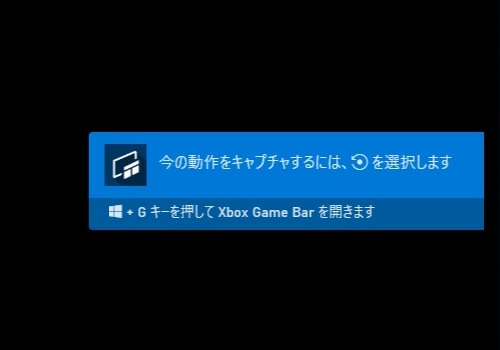
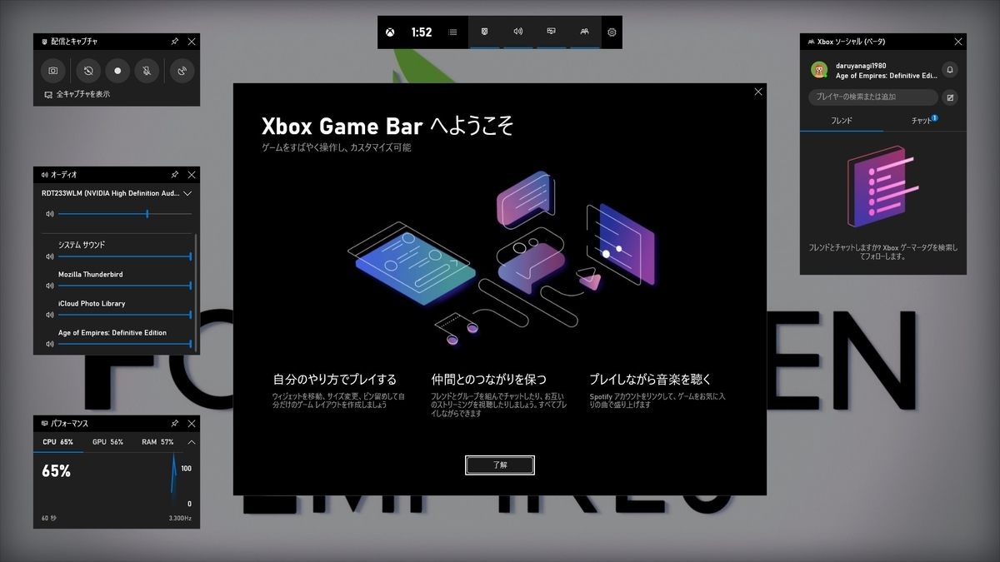
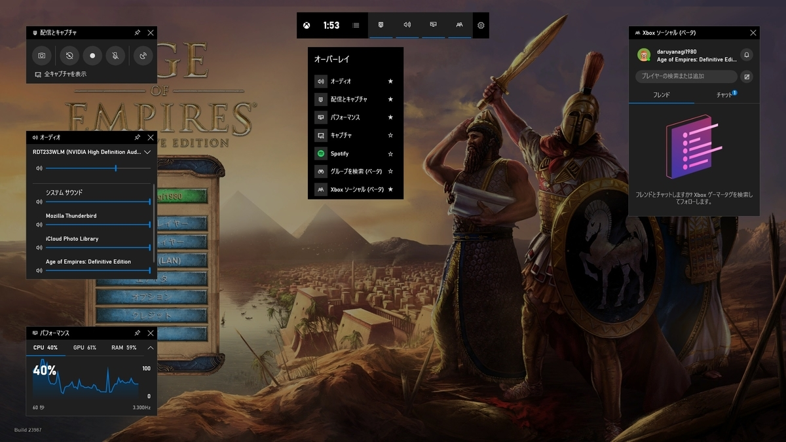
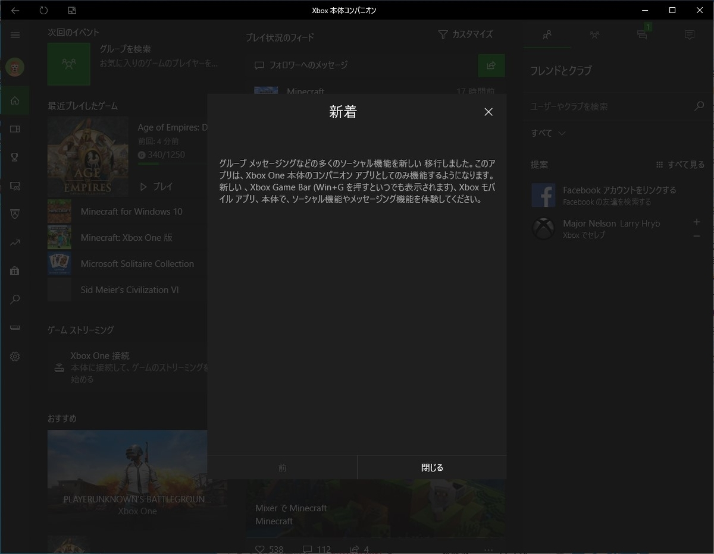
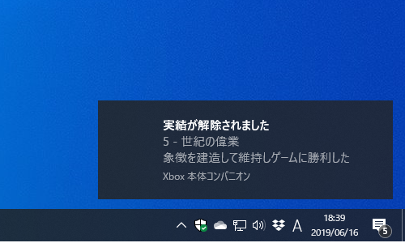

メモ：Windows 10 の新しいゲーム体験
執筆日時：
自分はあまりゲームはやらなくて、気晴らしに AoE1:DE をやる程度なのだけど――あ、そうそう、今度 2 にも DE が出るらしくてうれしい！
――それはともかく、起動時にちょろっとでてくるゲームバーの案内がちょっと変わってるっぽい。

Microsoft は最近、Windows 10 のゲーム バーをちょろちょろイジってるっぽくて、Xbox Insider か何かに入るとプレビューを受け取れるのだが、これがなかなかいい感じだと思う。

もはや「バー」ではなく、オーバーレイな何かになってしまっているが……
- キャプチャー、録画
- ストリーミング配信
- リソースメーター
- チャット
なんかが統合されていて、割と使いやすい。友達がいないのでチャット機能の使い道がないのがアレだが……

それぞれのパネルは配置や表示の ON/OFF を変えられるので、自分の使いやすいようにカスタマイズできる。リセット機能もあるので、気軽に試してみるといいかも。

あと、XBOX アプリも「Xbox 本体コンパニオン」という名前になったみたい（ちょっと前からかな？）。
Xbox 本体に PC をつないでストリーミングする機能なんかが面白そうなので、引っ越しして段ボールに突っ込んだままになってる Xbox One を救出したら試してみたいと思ってる。
